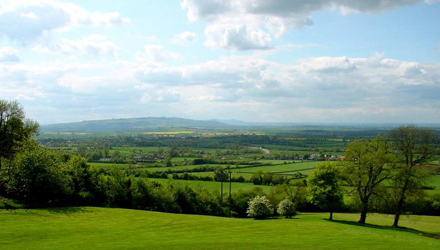

The event will be run as an open space. To find out what to expect and what to prepare before hand check out UnConference.net.
We will setup a wiki for attendees to submit session ideas and anything else prior to the event. This will also include ideas for evening activities
This is a nonprofit gathering and the only fees will be hotel accommodation (including meals & non alcoholic beverages) and transportation to the venue. All attendees, including the organisers, will be paying these fees.
Eventbrite will be used for registration, with a £100 up front non-refundable deposit required to secure a ticket.
The final balance will be settled at the hotel checkout. The deposit counts against this.
We are also looking to secure sponsorship which will go directly to bring the ticket costs down. If you would be interested to sponsor please get in touch.
There are 20 twin and 30 single rooms, all en-suite and attendees can choose to stay for two or three nights. The cost, in case we have no sponsorship, will be:
What is included?
The hotel booking includes breakfast, lunch and dinner. Biscuits, coffee and tea will be available throughout the day.
Note: drinks are not included.
Check-in will be on Thursday 19th September, after 12pm. SoCraTes UK will start at 5pm, just before dinner.
If you'd like to share a room with someone you already know there will be a page on the wiki where you can register your preference.
Cotswold Conference Centre Ltd
Farncombe Estate, Broadway, Worcestershire WR12 7LJ
0845 230 8580
The best place to find out how to get there is Farncombe's site
If you're in London or coming from abroad we recommend you get the train from Paddington headed to Hereford or Great Malvern and get off at Moreton-in-the-Marsh.
Please let us know if you're coming through this route and at what time, we will arrange for taxi's to pick you up in groups from the station. Each taxi should be a max of £25 each way.